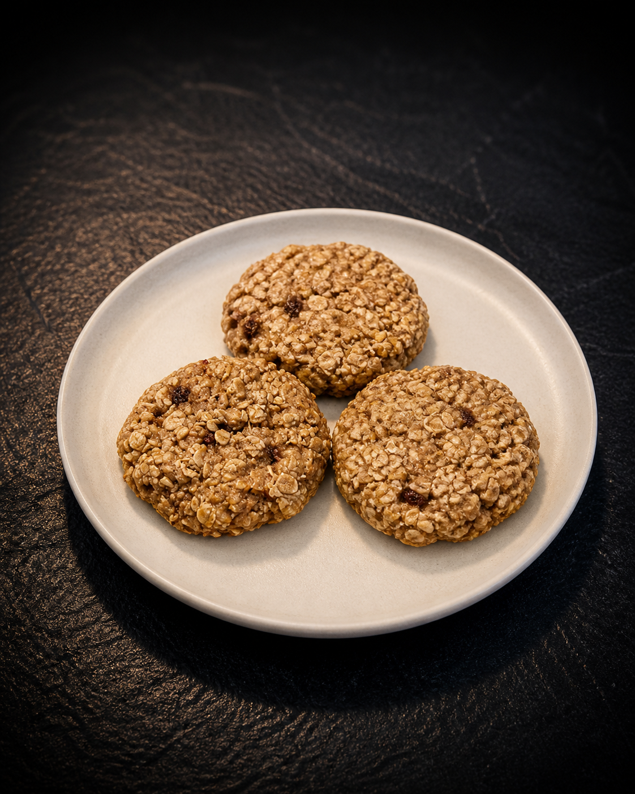

Cookies banane & flocons d'avoine

Ingrédients
- 1 banane
- 60 g de flocons d'avoine
- 5 g de miel
- 1 c. à café de vanille liquide
- 1 pincée de sel
Préparation
- Écraser la banane dans un bol.
- Ajouter les flocons d'avoine, le miel, la vanille liquide et la pincée de sel.
- Mélanger jusqu'à obtenir une pâte homogène.
- Former des cookies, puis cuire au four pendant 15 minutes à 180°C.
Valeurs nutritionnelles (approx.)
Par portion : 290 kcal • 7 g protéines • 4 g lipides • 58 g glucides